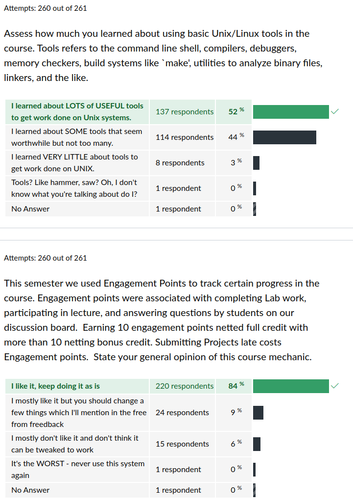
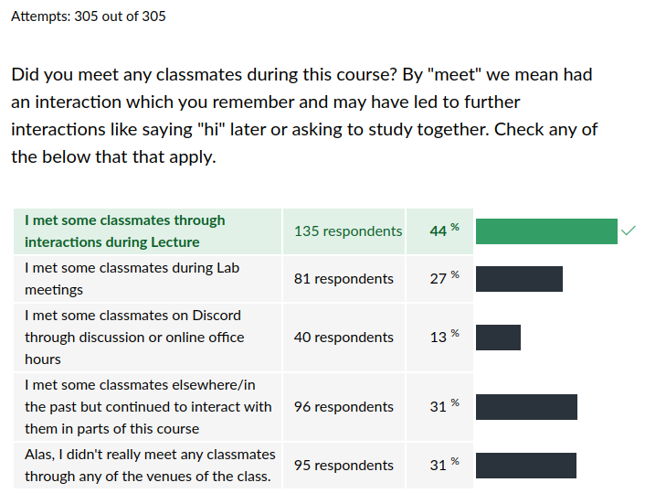
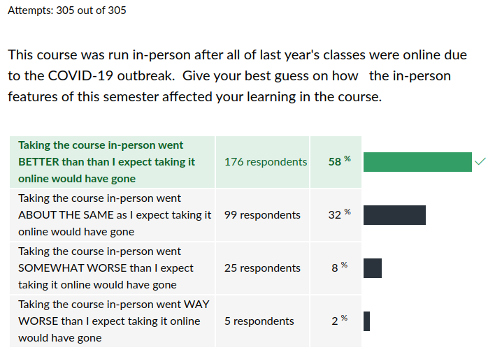

CSCI 2021 Exit Survey Results
Table of Contents
Summary Statistics for Multiple Choice Questions






Freeform Feedback
Frequent Items in Freeform Feedback
| Count | Comment |
|---|---|
| Overall | |
| 58 | Awesome semester / enjoyed the class / learned a lot |
| 16 | Well-adapted to online setting |
| 3 | Was intimidated by this class but it turned out fine |
| Exams | |
| 2 | Online exams are hard |
| Projects | |
| 4 | 5 projects is too many |
| 3 | Projects should be partner / group work |
| Labs/HWs | |
| 4 | More coding / active exercises in labs |
| 5 | Too many small assignments w/ HWs/Labs |
| 10 | Homework/lab too easy |
| Lecture | |
| 15 | Liked recordings, helpful for review / catching up |
| 6 | Fewer/shorter/no breakout rooms please |
| 1 | Do more breakout room activities |
| 1 | Talking through lecture exercises beats breakout rooms |
| Other | |
| 11 | Office hours via Discord worked really well |
| 22 | Office hours had long wait times |
| 3 | Too many tools (Canvas / Gradescope / Discord / etc.) |
| 9 | Would like real-time total for Bonus Engagement Points |
| 3 | Office hours online even when in person |
Props to Staff Members
A number of staff members were individually thanked by students in their free-form feedback for help during the semester.
| Thank-yous | Staff Member |
|---|---|
| 2 | Alex |
| 1 | Anya |
| 1 | April |
| 6 | Cole |
| 2 | Jake |
| 1 | John |
| 4 | Joseph |
| 1 | Josh |
| 2 | Kartik |
| 1 | Kerem |
| 4 | Swati |
| 14 | All TAs |
Notable Freeform Responses
Student comments are given in plain face.
Instructor responses are italicized.
Lectures
- Also, I would highly recommend making recorded lectures available to students (if only by request) once we transition back to in-person learning. It helped me tremendously to be able to go back and rewatch, play at different speeds, pause, and use subtitles. I don't think I would have been able to retain as much if I didn't have these options.
Alas, FERPA rules dictate that enrollment information is private. Since lecture recordings including student names, I will not be able to share them with future students, only with the students that were enrolled at the time. However, I will endeavor to make videos of some sort in the future as the ability to re-watch lectures for review or make-up was highly valued.
- I think that the breakout rooms during lectures should be required participation and not just for engagement points. I had another class that required these breakout rooms and for me, it really forced me to stay on top of things and not push off watching lectures till later.
- I understand the importance of breakout rooms, but for myself and I'm sure at least several other students, I found that the possibility of getting called on to speak in front of the class very anxiety-inducing and definitely led to me watching more lecture videos rather than attending live.
My experience so far with breakout rooms is mixed. They are meant to reflect fast in-class exercises which we would do in-person. Alas, technical issues often interfere which is a pain. More importantly, my anecdotal observation is that only about 60% of groups actually put forth effort and less than that actually engage fully to sort out the many details that are baked into exercises. I will continue to try breakout exercises BUT will mix in in-class discussion as well especially when time is short.
Office Hours
- I really didn't like how long the queue's for TA office hours got but I don't really think that there is anything that the TA's could have done to fix this. I think its just a result of everything being online.
- I was able to utilize office hours much more than normal since it was online, making getting help despite long lines much easier for me.
- I wouldn't mind having virtual office hours in future classes (when they return to in person instruction). I got more 1 on 1 time with the TAs and it helped improve my understanding better than when office hours were in person.
- I would wake up early around 8 or sometimes 7 to queue up when office hours start and already see tens of people in line if not more.
- I think the queue system on discord worked well to approximate how live office hours would function, and I liked discord as a tool other than the possible learning curve that some might go through.
- I think office hours were easier to access, but in turn that made it much more populated.
- I liked the slow mode on discord, as well as the limit on when people could queue up for office hours and help.
- Could there be some way to require that students to give better descpriptions of their problems to use office hours, like maybe requiring a link to a piazza post they made even if the post was just made?
- I kind of liked the discord office hours because I could get help at a time that was usually good for me compared to in person where I would have to go to a specific building for help and not know if I had to wait a long time for it or not.
Office Hours are generally difficult to manage and doubly so online. The general consensus is that Discord did a reasonable job of this though it has some failings. One of these quirks is that it opens the possibility to "queue camp": pitch a vaguely worded question on the help queue early in the day and then show up to office hours in a good position. This is not tractable for in-person help and I don't have a good remedy yet for Discord but will be thinking about it. Discord has many features and high scriptability which may help to address some of these issue.
- I think all csci courses should consider having an online office hours option even after covid is gone because half the trouble with attending office hours in the past was getting there but this saves a lot of travel time for people who want to get help but commute to school.
I imagine MANY things from the online-only era will carry over into the return to in-person. We will keep online office hours in mind to help at least some students.
- If you have 20+ students waiting in line for help every week leading up to projects and exams, that should probably be an indicator that the instructor is doing something wrong or insufficient.
Every class I have every taught both here and in my previous University has featured office hour crushes at certain times in the semester. I have considered whether this is a "bug" in my style and instead account for it as a "feature" that stems from two factors.
- I give reasonably challenging projects that may force students to learn concepts or code more intensely than they have done so previously
- I teach large classes. With 350+ students in both sections of CSCI 2021, it would only take 10% of the class to require help on a given project to net 35+ students at office hours. I believe strongly from experience that 10% of students are likely to procrastinate and start projects late which leaves office hours close to deadlines packed. If anyone sees a constructive remedy for this, particularly on how to prevent students from procrastinating, I'm all ears.
Engagement Points
- Engagement Points - I like the system, but it was very hard to keep track of my points, which meant I was eventually unsure of whether I had enough for using them on late days for projects.
- The engagement point system is pretty good, but I think that the part where we can get it from answering questions on piazza or participating in lecture is a bit blurry.
- Engagement points are an interesting idea, but Piazza is the only place they don't work as intended. Students will reply just for the sake of replying, somehow managing to write so much yet so little at the same time, just to look like they're contributing so they can receive an engagement point.
The Bonus Engagement Points that could be earned from Lecture and Piazza were a manual labor of love from me which I simply did not have time to keep up with regularly. I'll be contemplating some other means by which I could report these in a more timely fashion but participation like this is always a bit tricky to track.
- I think engagement points were good, but they should be given an upper bound, like at most 3% extra credit. It just feels a little unsafe knowing that some people maybe could have gotten like 5% just from answering questions online or discussion boards and so. Otherwise, I think the engagement points give students lots of flexibility.
The average Engagement Point score among all students was 10.68 but there were two students who earned 18 and 19 respectively. I knew these two by voice as they attended nearly every lecture and contributed a tremendous amount to discussion through excellent Q&A. While it is true that these two likely didn't need the additional credit, I do not believe their participation interfered with anyone else who wanted to participate during lecture and providing them with some recognition for their work is appropriate.
Projects
- In future, it might be helpful (might be too much of a giveaway, but figured I'd mention) for TA's to post brief overviews for students who don't necessarily know where to start on the project; quite often office hours queues are filled by people who start projects super late and don't have any substantive questions other than "AAAHHH what am i supposed to do I don't know what's going on".
I believe the TAs did do this for some projects. As I recall, Project 1 had several TA videos which were posted to assist students on sticky points. I'll endeavor to replicate this in the future and perhaps advertise it a bit more so students are aware.
- Please, please, please change project 1 for future students. Most other projects were decent, but project 1 was probably the biggest challenge during the semester which isn't fun when you're trying to learn a new programming language and pointers during the apocalypse. An easier, fluffier introduction to pointers would probably help ease students into the concept and result in less hair pulling for everyone involved.
- I felt like the projects were so incredibly time consuming for the limited amount of impact they have on the overall grade.
- I found the projects to be unbearably difficult at times, but I found these struggles necessary to succeed in the course, so I would not recommend changing the difficulty.
- I think the projects really solidified my understandings of concepts, but if we didn't have a topic covered in a project I don't really remember/understand it that well.
- Some of the projects were taxing, but that's probably where I learned the most so it was an effective use of time.
- The projects really drove the material into your head.
Programming is a difficult activity but the only way to learn how to talk to the machine in a specific language is to write something appreciable in it. I know that some students were caught off guard at times as in addition to learning C which was a stated course goal, their knowledge of prerequisite concepts likely data structures or basic file I/O may not have been firm. I appreciate the recognition that the difficulty of projects is not spurious: it teaches quite a bit for the effort that is applied.
- When it comes to projects there was quite a large variance in difficulty.
- I liked that [projects] were most like a bell-curve in difficulty, most difficult in the middle of the semester, more lenient at the end.
Project difficult was intended to vary. The projects were also meant to teach or exercise different skills and students often vary in their own skills. It is natural that students would perceive differing levels of difficulty in the projects.
- It felt like the project requirements at times were more confusing than the projects themselves. I think I spent a longer time reading the requirements than doing the coding for some of them,
I assure you that my solution to all projects is MUCH shorter than the description of what to do. The quickest way to convey to someone the nature of the correct program to solve their problem is to hand them that program. Pray that our customers never learn to do this as if they can code their own solutions, then they likely won't need to hire us programmers.
- I never felt a need to study too much for exams in this class because simply completing the projects did this for me.
- I think having projects due at least three days before exams might be helpful. This is because projects are really good ways to study for the exam and it'll ensure that students with the bad habit of procrastination (like me :/)
I do wish that we had time in the schedule to space the project deadlines and exams a bit more. I'll to arrange for this in the future but time is always tight.
- I think it would be interesting to have at least 1 group project in the future. I feel like it is important to have students work in teams because in the "real world" group coding is very common and can certainly be valuable to experience it before then. This project could also be longer than the others and slightly more challenging so the overall difficulty remains the same.
Group projects are a mixed bag and my experience from allowing group projects in CSCI 4061 has been many students prefer to work alone. I agree that learning cooperation skills is essential but I am unconvinced that CSCI 2021 is the right place for this to occur. It is a sophomore-level course which means that there will be large disparities in skills and maturity among students enrolled. This creates major problems for effective group work where one must assume most group members are equally capable of contributing, not the case at this level. I will be looking for possible ways to incorporate more collaboration, likely in labs.
Labs / HW
- I feel having more coding assignments, especially towards beginning of course when C is being heavily introduced would have been more effective. I do not dislike the demos, I just felt I needed bit more C practice before first project.
- Having separate coding exercises that are relevant would be cool. Maybe not graded, but easier small problems to introduce code.
- I think the labs could be more structured like assigning people to work on problems together in groups during lab time like how it would be in person, but that might be a little hard to do on discord.
- I liked the change of labs requiring code to be completed as I felt like I learned more that way.
- My biggest complaint with this class is that labs go way too fast and because of that I am just trying to keep up with the answers for the quiz rather than really absorbing useful information. Using the whole 50 minutes for a demo and going slower would be nice.
- The only thing I was not a fan off was labs. I did not like the demos, at the start of the lab, I feel it would be nice to use zoom for labs split us into breakout rooms so we work on the answers ans 20 min before the end of the lab we could do the little demo all together.
I'll be considering adjustment to the lab structure for the future. When we met in person, we would have students work together in groups to solve worksheets which involved analysis and coding. Most students found labs to relatively easy to solve but not particularly rewarding unless they involved some coding. I also want to make some adjustments to TA involvement as the demos were only partially successful.
- I think that the reason I didn't learn much from the homework is that I could just try each answer on the quiz with no penalty.
At the midterm, most students reported NOT doing this but I am unsure whether this was honesty or an attempt to prevent more difficult HW from emerging. At any rate, I am glad for your honesty. HW was supposed to easy, low-stakes practice, an important component to any course of study. I'm not likely to change that much unless there i
Miscellaneous
- I didn't like that we had exams, projects, lab quizzes, AND homework quizzes. I thought it was too scattered and too much to keep track of, so maybe having only lab quizzes or only homework quizzes would be better.
- I would have liked every due date to be made an assignment on canvas so I can look at my canvas calendar every day and see what CSCI 2021 needs from me in the next week. Rather than going to gradescope to check due dates, I should be able to see CSCI 2021 due dates alongside my other class due dates.
Coordination is definitely difficult. The synchronization feature between Canvas / Gradescope was added to our systems but is something I have not explored fully. I will in the future as I know many students utilize Canvas to ease their deadline tracking.
- This class was very demanding but it payed serious dividends. I would recommend.
This is exactly what we are aiming for. Glad it worked for you.
- I don't know if this is possible but when I was learning C++ my professor had an extra special topics session for the class that could be registered for separately that had TAs on duty and activities related to content we are learning in the class.
There are several "support" courses for some of the CSCI 11xx intro programming courses. If this is what you mean, there some discussion among faculty as to whether we would expand that roster to any other courses but it is not likely to happen any time soon.
- I think at first it was sort of hectic learning about where labs and lectures would be and how they would work, but after the first week, it was pretty smooth sailing.
I'm glad that the confusion resolved to clarity. The set of adjustments for online offerings is somewhat intricate with new tools and conventions on top of actual course content. I appreciate all the effort students put into adapting.
- What the hell is a statbuf struct or whatever. Why could you declare them in the middle of your code without giving them any fields and use them later?
- I know how to problem solve with coding but only if everything is set up for me and the problem is laid out. When it comes to making my own programs that can actually be useful to me, my knowledge seems very narrow and not very useful yet.
Be patient. No one learns to ride a bicycle all at once. You learn by watching others ride, sitting on the bike for a bit, riding with training wheels for a while, eventually removing them, falling on your face a few times, and then pedaling like crazy. A good CS curriculum teaches you a bunch of ingredients and gives some small projects for you to train on but it's likely that won't feel proficient until you have worked on some real-world projects. This could happen in your first internship or job. Most employers expect significant amounts of training for fresh graduates. If you are in a hurry, get involved in an open-source project like the VS Code or Emacs. While these might seem bewildering at first, at least TRYING to understand the code will teach you a lot about how real projects get built and better prepare you to contribute or fork your own.
- I will say I think it's easier to learn less while doing better than normal in the online format. That certainly wasn't specific to this class however, I think it's just a consequence of online learning. It's difficult to make something challenging enough where you have to learn the material, while still not overloading students and making some freak out.
I'm glad you appreciate the delicate balance that any college course must strike, especially while plagues and political unrest have added greatly to the stress of students and staff alike. If you took at least some useful information away from the course, I've done my job.
- I hate machine architecture and it's something I hope I never have to use again, however I enjoyed the course.
Well, the innards of the machine aren't for everyone. However, in the likely event that you must one day mangle some bits, optimize some low-level code, or otherwise crack open the black box that plays all the music we write, hopefully this course has given you a starting point to understand what you see.
One-upmanship
- Professor Kauffman does talk a bit fast, and even slowed down it was hard to comprehend some of what he said.
- KAUFMANN DOES TALK WAYY TOOOOO FAST!
- Kauffman talks too fast to play at 1.5x speed
- Kauffman does tell too fast for 1.5 speed lol.
- Kauffman talks too fast to play at 1.5x on videos this cannot be emphasized enough.
- Haha playing professor Kauffman at 1.5x speed was not doable, but 1.25x was!
- I actually posted somewhere on the internet that I couldn't watch Kauffman at anything faster than 1.25x lol!
- Just a quick flex: I usually watched the lectures at 1.5x
- Kauffman at 1.5x is perfect
- I actually started thinking that Kauffman's normal talking speed was 1.5x in real life.
- I found that 1.75x speed was doable for prof Kauffman as long as you paid attention to what he was saying for most of the time which has been a total blessing.
- I watched on 1.75x and understood well enough…
- Talking speed is perfect for both 1.5 and 2.0
- I still watched Kauffman's videos on at least 2x, often 2.5x, so I have no complaints in that regard.
- Watched lectures at 2x speed which I found to be a much more efficient use of my time.
- I think Mr. Kauffman speaks slow enough to play at 2x speed so keep being you (at x2) :)
- I watched lecture 2.5 speed it was fine
- Lectures were still understandable at 2.5 :thumbsup:
Conclusion: I will continue speaking at exactly the same speed as I do right now.
The Far Side
- I use arch btw
Arch for the WIN

- Dr. Kauffman also was very "humanable", meaning he did not feel as though he is some sort of knowledge "god". Very much so removed embodiments which would promote "imposter syndrome."
Cool…. I think?
- Please stop using Discord for anything related to the course, or at least do not tie essential coursework (such as labs and office hours) to it. Discord is spyware– it is a proprietary chat application that vacuums up far more data about your computer than it ought. It is unclear how the company behind Discord makes money– likely by auctioning off their users' data
Next semester I'll make sure to run the whole course on Jitsi next semester and also require students to connect through the Tor network and perhaps write their own custom ciphers to ensure that our online communications cannot be observed and monetized. I'm sure that will work extremely well…
In seriousness, I appreciate your concern for student privacy. However, with >50% of students already familiar with Discord, I believe that the majority of the class is already comfortable at least tacitly with the service for observation trade-off. I expect Zoom, Piazza, and probably the UMN's Google tools also aggregate information about usage not the mention the fact that ALL our internet communications are likely observed by your provider, very likely Comcast/Xfinity in this area. While I lament the fact that we need better privacy laws to protect online activity, uses of Discord provided a LOT of benefit for the course so I think we did OK here.
- I also appreciate the humor in the assignments and BOTW reference in the survey.

- [Prof Kauffman] brings this completely different energy to the course that makes it feel a lot less daunting and more like a middle school class trip (just more difficult).